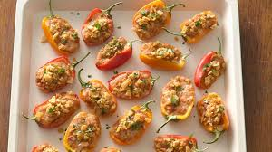

Stuffed Mini Bell Peppers

Ingredients:
- Mini bell peppers, cut in half and seeded; cream cheese (use plain or flavor it with herbs or garlic).
- cooked rice or quinoa
- chopped cherry tomatoes
- chopped fresh basil leaves
- To taste, add salt and pepper.
- Shredded cheese is optional as a topping.
Instructions:
- Adjust the oven temperature to 375°F (190°C) and place parchment paper on a baking pan.
- Cooked rice or quinoa, chopped basil leaves, diced cherry tomatoes, and salt and pepper to taste should all be combined in a mixing dish. Blend thoroughly.
- A teaspoon of cream cheese should be placed inside each small bell pepper halve, spreading it evenly.
- Fill each half of a bell pepper with a spoonful of the quinoa or rice mixture, gently pressing down to compact it.
- Optional: For an extra cheesy touch, top each stuffed pepper with shredded cheese.
- After arranging the filled small bell peppers on the prepared baking sheet, bake them in the preheated oven for 12 to 15 minutes, or until the filling is thoroughly heated and the peppers are soft.
- When finished, take them out of the oven and allow them to cool a little before serving.
- Warm filled little bell peppers are a tasty and filling snack. Enjoy them!